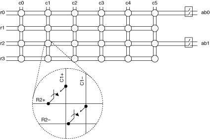
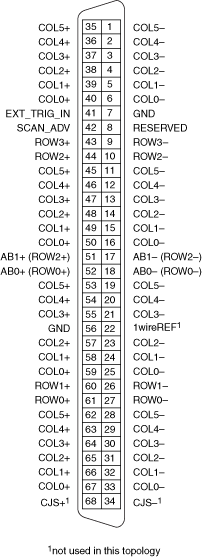

将 NI PXI-2501/2503 用作2 线4×6矩阵时，请使用 NI TB-2606 接线端子连接您的信号。下图是该模式下 NI PXI-2501/2503 的示意图。
|  |
在此拓扑中，将正极和负极引线连接到NI TB-2606 接线盒内的C x ± 或 R x ±。
在扫描期间，示例扫描列表条目是r2->c1；. 此条目将连接到 R2+ 的信号路由到 C1+，并将 R2– 连接到 C1–。
在使用r2和c1调用niSwitch Connect Channels VI 或niSwitch_Connect函数的即时操作期间，连接到 R2+ 的信号被路由到 C1+，连接到 R2– 的信号被路由到 C1–。要将信号路由到 AB0，请使用 niSwitch Connect Channels VI 或带有com0和ab0的niSwitch_Connect函数。
下图和表格标识了 2 线 4×6 矩阵拓扑中 NI PXI-2501/2503 的引脚。

| 软件名称 | 极性 | 硬件名称 | |
|---|---|---|---|
| NI PXI-2501/2503 连接器引脚编号 |
NI TB-2606 终端名称 |
||
| c0 | + | 67、59、50、40 | C0+ |
| - | 33、25、16、6 | C0- | |
| c1 | + | 66、58、49、39 | C1+ |
| - | 32、24、15、5 | C1- | |
| c2 | + | 65、57、48、38 | C2+ |
| - | 31、23、14、4 | C2- | |
| c3 | + | 64、55、47、37 | C3+ |
| - | 30、21、13、3 | C3- | |
| c4 | + | 63、54、46、36 | C4+ |
| - | 29、20、12、2 | C4- | |
| c5 | + | 62, 53, 45, 35 | C5+ |
| - | 28、19、11、1 | C5- | |
| r0 | + | 61 | R0+ |
| - | 27 | R0- | |
| r1 | + | 60 | R1+ |
| - | 26 | R1- | |
| r2 | + | 44 | R2+ |
| - | 10 | R2- | |
| r3 | + | 43 | R3+ |
| - | 9 | R3- | |
| ab0 | + | 52 | AB0+ |
| - | 18 | AB0- | |
| ab1 | + | 51 | AB1+ |
| - | 17 | AB1- | |
| NI PXI-2501/2503 连接器引脚编号 |
信号名称 |
|---|---|
| 7, 56 | 接地 |
| 41 | 触发 |
| 42 | SCANADV |
| 8 | RESERVED |
| 68 | CJS+ |
| 34 | CJS- |
| 22 | 1wireREF |
|
注意 不要连接到 RESERVED 引脚。 |
 提交有关此主题的反馈。
提交有关此主题的反馈。 访问ni.com/support以获得技术支持。
访问ni.com/support以获得技术支持。